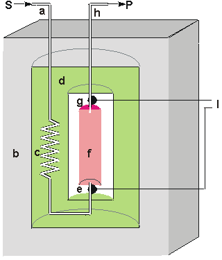
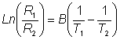
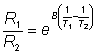
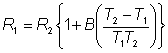
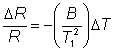
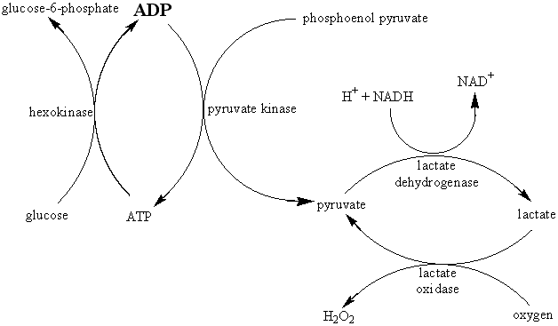

Enzyme Technology
Calorimetric biosensors
Many enzyme catalysed reactions are
exothermic, generating heat (Table 6.1) which may be used as a basis for
measuring the rate of reaction and, hence, the analyte concentration. This
represents the most generally applicable type of biosensor. The temperature
changes are usually determined by means of thermistors at the entrance and exit
of small packed bed columns containing immobilised enzymes within a constant
temperature environment (Figure 6.2). Under such closely controlled conditions,
up to 80% of the heat generated in the reaction may be registered as a
temperature change in the sample stream. This may be simply calculated from the
enthalpy change and the amount reacted. If a 1 mM reactant is completely
converted to product in a reaction generating 100 kJ ˣ mol−1 then each
ml of solution generates 0.1 J of heat. At 80% efficiency, this will cause a
change in temperature of the solution amounting to approximately 0.02°C. This is about the temperature change commonly encountered and
necessitates a temperature resolution of 0.0001°C for the biosensor
to be generally useful.
Table 6.1. Heat
output (molar enthalpies) of enzyme catalysed reactions.
|
Reactant
|
Enzyme
|
Heat
output
-DH (kJ ˣ mol−1)
|
|
Cholesterol
|
Cholesterol oxidase
|
53
|
|
Esters
|
Chymotrypsin
|
4 - 16
|
|
Glucose
|
Glucose oxidase
|
80
|
Hydrogen
peroxide
|
Catalase
|
100
|
|
Penicillin G
|
Penicillinase
|
67
|
|
Peptides
|
Trypsin
|
10 - 30
|
|
Starch
|
Amylase
|
8
|
|
Sucrose
|
Invertase
|
20
|
|
Urea
|
Urease
|
61
|
|
Uric acid
|
Uricase
|
49
|

Figure
6.2. Schematic diagram of a calorimetric biosensor. The sample stream
(a) passes through the outer insulated box (b) to the heat exchanger (c) within
an aluminium block (d). From there, it flows past the reference thermistor (e)
and into the packed bed bioreactor (f, 1ml volume), containing the biocatalyst,
where the reaction occurs. The change in temperature is determined by the
thermistor (g) and the solution passed to waste (h). External electronics (l)
determines the difference in the resistance, and hence temperature, between the
thermistors.
The
thermistors, used to detect the temperature change, function by changing their
electrical resistance with the temperature, obeying the relationship

(6.2)
therefore:

(6.2b)
where R1 and R2 are the
resistances of the thermistors at absolute temperatures T1 and T2 respectively and B is a characteristic temperature constant for the
thermistor. When the temperature change is very small, as in the present case,
B(1/T1) - (1/T2) is very much smaller than one and this
relationship may be substantially simplified using the approximation when x<<1 that
ex»1 + x (x here being B(1/T1)
- (1/T2),

(6.3)
As T1 » T2, they both may be replaced in the denominator by
T1.

(6.4)
The relative decrease in the
electrical resistance (DR/R) of the thermistor is proportional to the
increase in temperature (DT). A typical proportionality constant
(-B/T12) is -4%°C−1. The resistance change
is converted to a proportional voltage change, using a balanced Wheatstone
bridge incorporating precision wire-wound resistors, before amplification. The
expectation that there will be a linear correlation between the response and the
enzyme activity has been found to be borne out in practice. A major problem with
this biosensor is the difficulty encountered in closely matching the
characteristic temperature constants of the measurement and reference
thermistors. An equal movement of only 1°C in the background
temperature of both thermistors commonly causes an apparent change in the
relative resistances of the thermistors equivalent to 0.01°C and
equal to the full-scale change due to the reaction. It is clearly of great
importance that such environmental temperature changes are avoided, which
accounts for inclusion of the well-insulated aluminium block in the biosensor
design (see Figure 6.2).
The sensitivity (10−4 M) and range (10−4 -
10−2 M) of thermistor biosensors are both quite low
for the majority of applications although greater sensitivity is possible using
the more exothermic reactions (e.g., catalase). The low sensitivity of the system
can be increased substantially by increasing the heat output by the reaction. In
the simplest case this can be achieved by linking together several reactions in
a reaction pathway, all of which contribute to the heat output. Thus the
sensitivity of the glucose analysis using glucose oxidase can be more than
doubled by the co-immobilisation of catalase within the column reactor in order
to disproportionate the hydrogen peroxide produced. An extreme case of this
amplification is shown in the following recycle scheme for the detection of ADP.
 ATP: ATP --(hexokinase)--> ADP; pyruvate--(lactate dehydrogenase)-->lactate; lactate --(lactate oxidase)--> pyruvate" width="628" height="367">
[6.2]
ADP is the added analyte and excess glucose, phosphoenol
pyruvate, NADH and oxygen are present to ensure maximum reaction. Four enzymes
(hexokinase, pyruvate kinase, lactate dehydrogenase and lactate oxidase) are
co-immobilised within the packed bed reactor. In spite of the positive enthalpy
of the pyruvate kinase reaction, the overall process results in a 1000 fold
increase in sensitivity, primarily due to the recycling between pyruvate and
lactate. Reaction limitation due to low oxygen solubility may be overcome by
replacing it with benzoquinone, which is reduced to hydroquinone by flavo-enzymes.
Such reaction systems do, however, have the serious disadvantage in that they
increase the probability of the occurrence of interference in the determination
of the analyte of interest. Reactions involving the generation of hydrogen ions
can be made more sensitive by the inclusion of a base having a high heat of
protonation. For example, the heat output by the penicillinase reaction may be
almost doubled by the use of Tris (tris-(hydroxymethyl)aminomethane) as the
buffer.In conclusion, the main advantages of the thermistor biosensor are its
general applicability and the possibility for its use on turbid or strongly
coloured solutions. The most important disadvantage is the difficulty in
ensuring that the temperature of the sample stream remains constant (±
0.01°C).
Home
| Back | Next
This page was established in 2004 and last updated by Martin
Chaplin
on
6 August, 2014
|